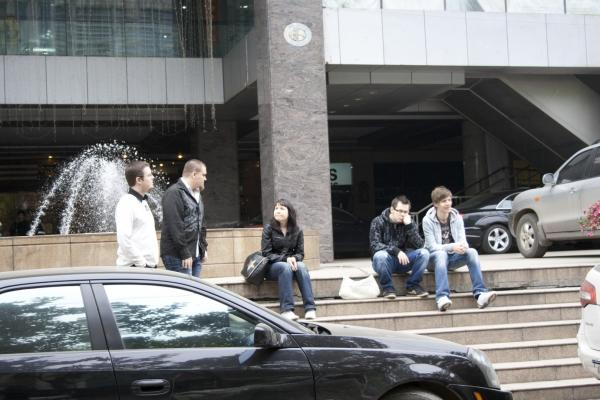
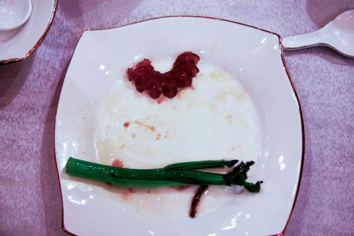
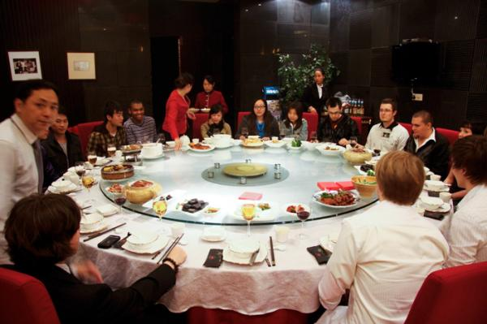
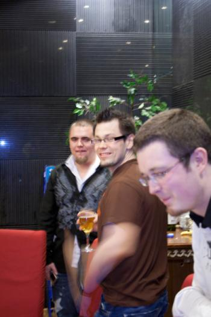
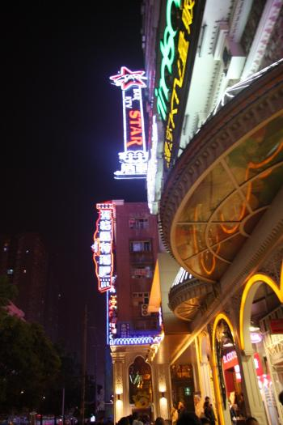
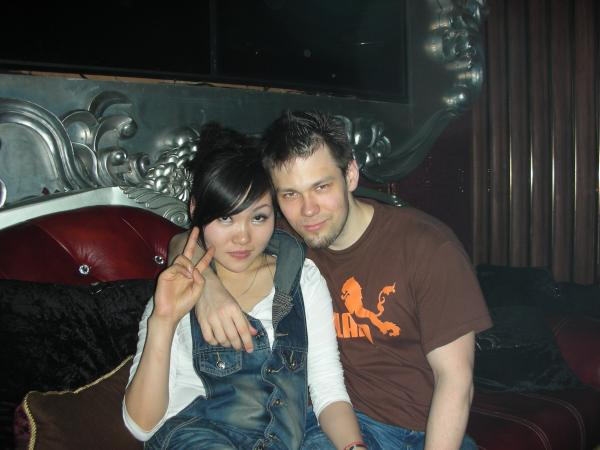

Changsha, day 4 of our trip
So, this will be my part of the collective China blog us Paragon members have released/are going to release. I'll also write about day 5 when arx and xodan will take care of our days in Beijing.
After arriving to Changsha, meeting all the Chinese players, eating a lot, seeing weird stuff happen at the Chinese theater, attending the massive event, eating again and again and again, posing in 100+ pictures, getting pretty drunk and having the quiet "day after" we woke up on the 4th day of our trip in China (no one really slept in the aeroplane anyway so that doesn't count). We had met some people at the bar last night, and their comment about us was "they could not walk or talk". Always a nice impression to give to new people. Anyway, I think I impressed the only white guy in town with my "Ni Hao" -super Chinese knowledge (he didn't understand why I greeted the only American there with Chinese tho, I doubt I knew the reason either) and they invited us to hang around with them and promised to show more of Changsha next day.

Waiting at the hotell.
Having them with us was really irreplaceable as if we would have just went somewhere in Changsha ourselves we probably would have ended up seeing McDonald's and maybe some nice Chinese building, and missing out on all the (literally) breathtaking stuff.
Offtopic awesomeness, HANS!
Anyway, our new hosts promised to pick us up at the Hotel, and after waiting a bit they showed up with a van which had seats for 20 us out and took us to a tour at the city. One of the great places we got to see was one of Changsha's bigger restaurants, Maojia restaurant. It was kind of hilarious to hear them playing some army march -stylish music at the parking lot but as we already knew, those are not the kind of things you should laugh at in China. Actually, better to not laugh at strange things at all, not at the first glimpse anyway. There was around 20 of us in the party, and the private room we were escorted to was completely HUGE! This place also had the "Lazy Susan" and we prepared to have another great experience with Chinese food and chopsticks.
Maojia Restaurant
The food we ate was absolutely delicios (as it always was), and I got to sit with my soul mate shadow priest, and I enjoyed talking with him, Nize and others around our end of the table a lot. Unlike the most of the Chinese we had met so far, the guys in this party spoke fluent English with a few exceptions. It was great to actually exchange ideas and talk about the differences between China and the Western world and fully understand each other. We told about our experiences so far at the event and China overall, and I even had the courage to tell about my nemesis. I'll share it with you as well now, this is how the tragic story goes: when we were eating at the welcoming dinner at the event, we had our first experience with chopsticks. As you know, all of us had practised beforehand and thought we could handle the sticks and the pressure. But as China is a country of wonders, we were of course wrong to think we were well enough prepared. We were given a lot longer, heavier and more slippery chopsticks than we had used back in Finland, and you can just imagine how lost we were with them. Steven, one of our new friends tried to help us out, and one of our translators even came to show us how it's done but in the end the waitresses brought us forks as it looked so desperate. But as we are warriors, none of us gave in and we fought trough the meal and mastered some of the sacred art of chopsticks. But yeah, the nemesis. We met already on the first dinner, and I had to encounter it on every dinner after that. They are green, long and very, very slimy/slippery vegetables, which I tried to grab at least 5 different times before I was shown the right tactic. An attempt lasted around ~40 seconds of dersperate pinching, turning and trying to lift the damned thing from the plate to my plate! I still hate you, tasty nemesis!

Nemesis and... read on and find out what!
Even when I did a bit better with nemesis this time, it wasn't the only interesting food we ended up having at the dinner in Maojia restaurant. Jared, who had ordered the food had a weird smile when he asked us to eat one of the dishes and after everyone (but me) had tasted, he told us it was bovine (male cow) penis. Arx says it was decent but I knew something was wrong with it so I chickened out and din't taste all the slimy, completely black or too jelly food. The tactic worked out very well on the trip overall, and I can say I tasted only 1 dish I found absolutely disgusting, rest was just awesome.

Our party
After eating our bellies full, and of course toasting like crazy with beer and wine it was time to go and experience some more of Chinese night life. I guess someone had heard of my love for clubbing and dancing as they took us to club where we got a private section just next to the dancefloor. The club was just like any club in Finland, except we had to walk throgh a metal detector on our way in. Or the normal people had to, we just skipped it. The music was just as in any western club and those damned boys got me up on the dancefloor way before the Chinese had started using it. My god the people at the club were staring at dancing nerds but at least now I can say I've danced before ~200 Chinese people in Changsha.

Ready to paaarty!

Party time, Hans chickened out at 10pm!
The drinks kept pouring in and some random girls appeared at some point of the night, didn't talk any English, but played drinking games with the boys from our party. I heard later they were damn good, and the nerds just kept losing. Myself I mainly danced and kept out of the drinking game, so the night is crystal clear in my head. Also the part when we had to leave and arx walked to me and told he can't get Deva moving, he said he was too big. I guess Deva wanted to keep on partying and I had to go and soothe him, talk sweet things to his ear and beg him to walk with me outside. It went pretty smooth untill he saw the girls and instantly left me to join the. When we finally got outside we divided into 3 taxis which were supposed to take us back to the Hotell. Apparently, this wasn't the case with arx and Deva's taxi. The next morning arx told me the taxi took him and Deva to a freaking expensive massage "club" where he had to explain for more than 15 minutes that he only wanted a normal massage. Deva passed out in his private room there, so sadly he didn't have that much time to enjoy the experience.

I kind of understand why Deva was fine with losing to these girls.
Anyway, the day was perfect and our hosts promised to meet us next day as well, when we'd go shopping and visiting the Yuelu mountain, more of that in my next entry.
Us and some of our awesome hosts.
- xenophics's blog
- Log in to post comments
Comments
Thank god you have endurance from pushing world firsts, so the nemesis was no match in the end against the persistent Xenophics.
Thu, 28/04/2011 - 17:13
hey xeno it's good to read all of this .....and every news on internet here about this trip are in chinese if you like i would still send you the links
and sadly the dream guild disbanded and there is no event like this next year
any way it's so nice to know all of you guys paragon and for the hord
i wish i can visit finland one day i hope it's not too ~~~ cold ^^
Mon, 02/05/2011 - 11:08
Hey Pan! We'd love to see the links to forums/sites that discuss the trip so we can read them with google translate.
It's very sad to hear that Dream will reform and they lost their sponsorship. It's even more sad to know that we won't get invited next year, but I promised you, that one day I'll be rich enough to travel back to Changsha and meet you all again. I really miss the country and all of you :/
Fri, 06/05/2011 - 10:47
hey xeno here is the link http://www.baidu.com/s?wd=paragon%B3%A4%C9%B3&pn=0&tn=sogouie_dg
“paragon 长沙 ” "长沙“is the charactor of chang sha
cos too many blogs so i just give you the link how i find news about the trip
and i'd love to welcome you anytime and also would love to invite all of you come to my place hopefully can cook for you by myself next time
Sat, 07/05/2011 - 02:16